A “FIFO” is a First-In First-Out memory buffer, basically a type of queue. It’s main application is to interface between devices that process data at varying rates. Rather than synchronize the devices, a FIFO is used to hold data from one device until the other device is ready to deal with it.
Consider a scenario where a user types some text on a keyboard, and it is transmitted via UART to another device or system. Some important considerations:
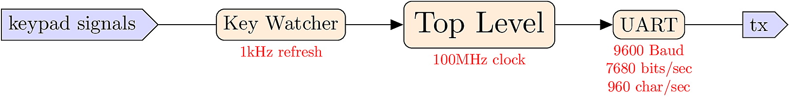
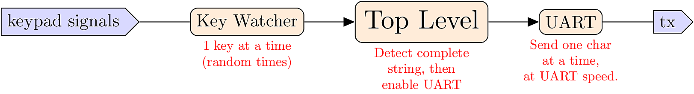
A Queue is a solution for synchronizing between processes that run at different speeds.
In the abstract, we consider a transmitter T and a receiver R. When T has some data, it should send it to R, but first it needs to make sure that R is ready. On the other side, when R is ready to receive data, it needs to verify that T actually has some data available.
The queue brokers this transaction by providing a small amount of memory. T can write into the queue at any time, and R can read from the queue at any time.
The most common type of queue is the First-In, First-Out (FIFO) protocol, where each item waits its turn to be processed in the order of arrival. By using FIFOs, each module in a system can have a standardized FIFO interface, and all timing complexities are handled by the FIFO instead of the individual modules.
A second type of queue is the Last-In, First-Out (LIFO) protocol, also known as a stack. Stacks are commonly used as a memory resource for building algorithms. FIFOs are also sometimes useful for building algorithms in addition to process synchronization.
Most of the time, a FIFO connection sits idle, waiting for events to happen.
At a random time, T has some data. T checks to make sure the FIFO is not full, and notifies the FIFO that data is ready. This process of requests and notifications is called handshaking.
The FIFO stores the data, and notifies T that it is finished. T concludes the transaction.
At another random time, T has more data, and repeats the request.
The FIFO loads the new data, placing it behind the earlier data in the queue.
Then the channel goes idle, waiting for more events.
At some random time, R is ready to handle data. R notifies the FIFO that it is ready, and the FIFO indicates that it is not empty.
The FIFO delivers the data. R consumes the data. When R is finished, it notifies the FIFO that it is ready again, and the FIFO indicates that it is not empty.
The FIFO delivers the last data. R consumes the data. When R is finished, it notifies the FIFO that it is ready again, and the FIFO indicates that it is empty, so the transaction is done. The channel will go idle again.
The FIFO represents three subsystems:
During any particular clock cycle, the FIFO can accept data (tx_rdy), deliver data (rx_done), or do both simultaneously. The FIFO contains an array called the buffer, which stores data in between the read and write events.
A buffer manager process is necessary to coordinate incoming and outgoing data, and keep track of their locations within an internal array.
A FIFO module needs two interfaces, one for the transmitter and one for the receiver. It also needs signals to indicate if the FIFO is empty or full.
module fifo(
input clk,
// Transmit Interface
input tx_rdy,
output reg tx_done,
input [WIDTH-1:0] in_data,
// Receive Interface
output reg rx_rdy,
input rx_done,
output reg [WIDTH-1:0] out_data,
// Indicators
output reg empty,
output reg full
);The system begins in state 0, waiting for a tx_rdy event. If the event happens, and the buffer isn’t full, an incr signal is sent to the buffer manager, telling it to load data into the buffer. The incr signal should last only one cycle, so it is set back to 0 in subsequent transitions.
On the receiving (output) side, we begin in state zero, corresponding too an empty buffer. Once the buffer is non-empty, it loads the oldest data into out_data and waits in state 1. When an rx_done signal is received, it generates a decr pulse to notify the buffer manager that data is removed.
An array in Verilog is similar to an array in C. The elements of the array are words, and each word has a specifiable WIDTH, and the number of elements in the array is called the DEPTH. A Verilog array declaration looks like this:
reg [WIDTH-1:0] buffer [DEPTH-1:0]; The words of the array can addressed using C-style indexing, like this:
parameter WIDTH = 8;
parameter ADR_WIDTH = 3;
output reg [WIDTH-1:0] out_data ;
reg [WIDTH-1:0] buffer [DEPTH-1:0] ;
reg [ADR_WIDTH-1:0] index ;
// ... later in the code ...
out_data <= buffer[index];Note that the index signal is used to select elements from the array, so ADR_WIDTH needs to be big enough to count up to the highest array position.
The buffer manager process has two jobs:
Since the FIFO means “first-in, first-out”, new data is always placed in the “back” of the buffer. When data is retrieved from the FIFO, it should come from the “front”. Since these events happen at random times, we use movable indices to keep track of the front/back positions.
As an example, consider a buffer with DEPTH=5. Initially, the buffer is empty with front=back=0.
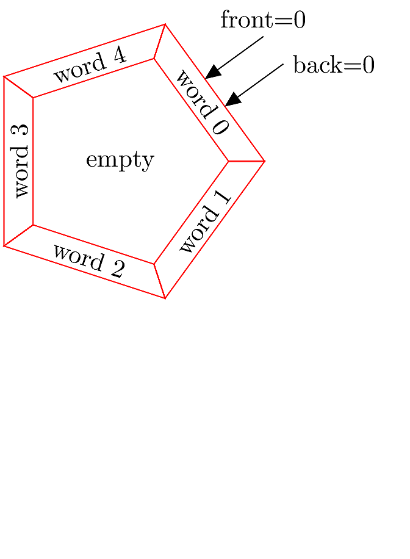
Next, some data is input to the FIFO. It is loaded into the front position, then front is incremented while back stays at 0, pointing to the data. The buffer is no longer empty.
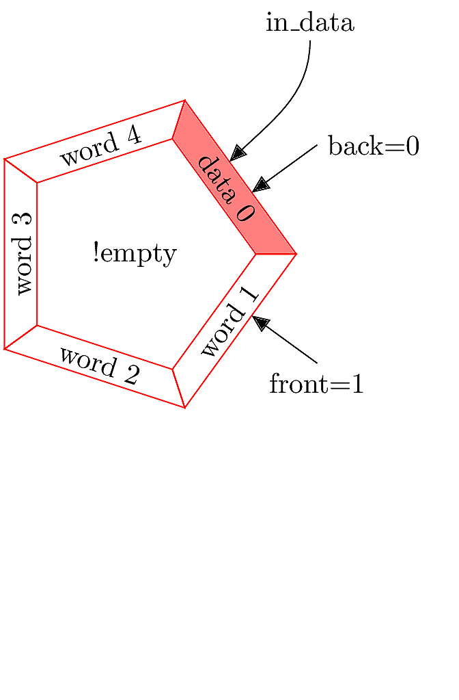
When data is successively pushed into the FIFO, it is placed at the front position and front is incremented each time.
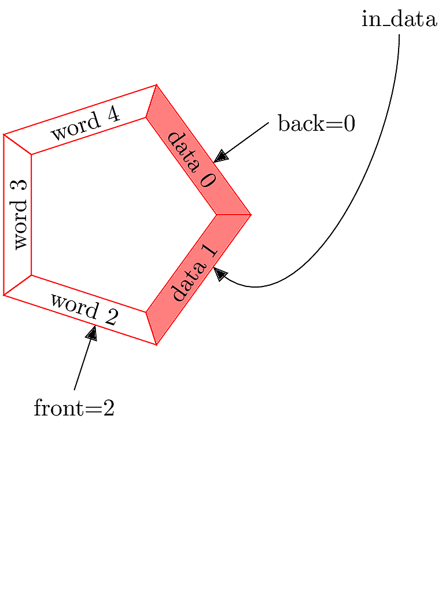
Here comes some more data.
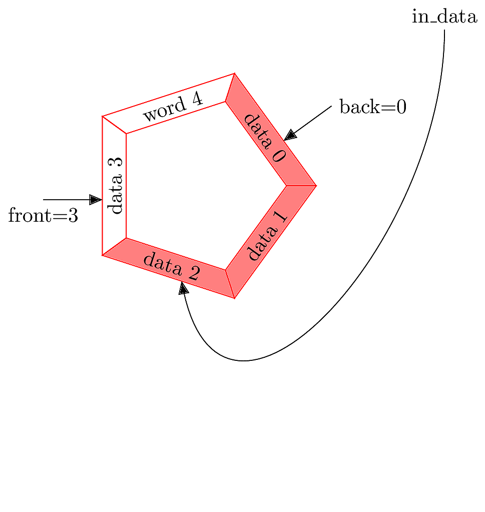
When data is pulled out from the FIFO, it comes from the back, since that is where the “first” (i.e. oldest) data is located. The data item is written to the output interface, and back is incremented. The old data is still present at array position 0, but is now considered stale (indicated by the gray color).
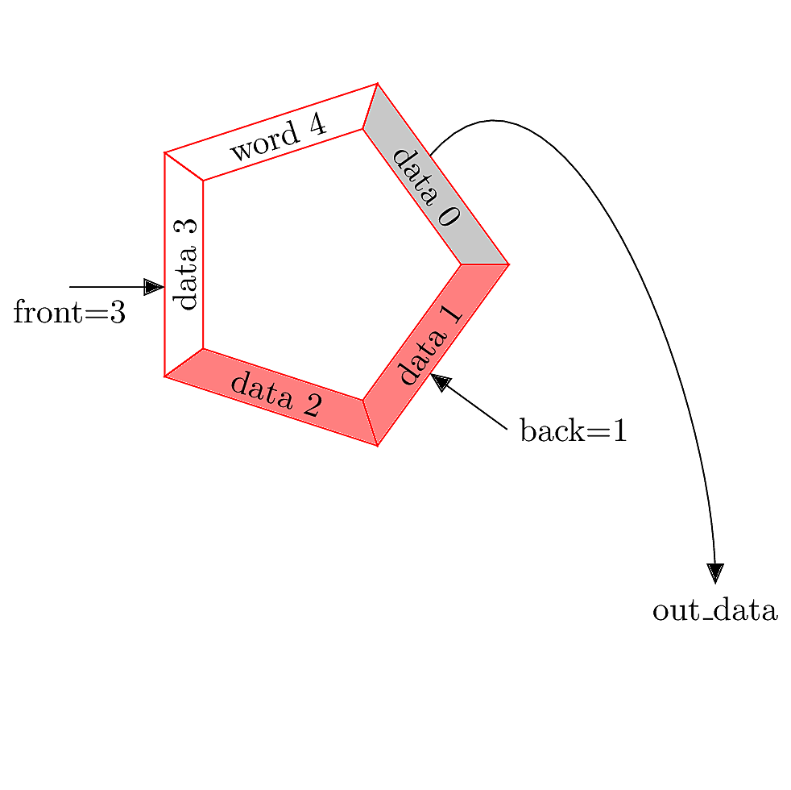
As more data arrives in the buffer, the “active” portion of the buffer rotates clockwise, with front and back incrementing in response to each access event.
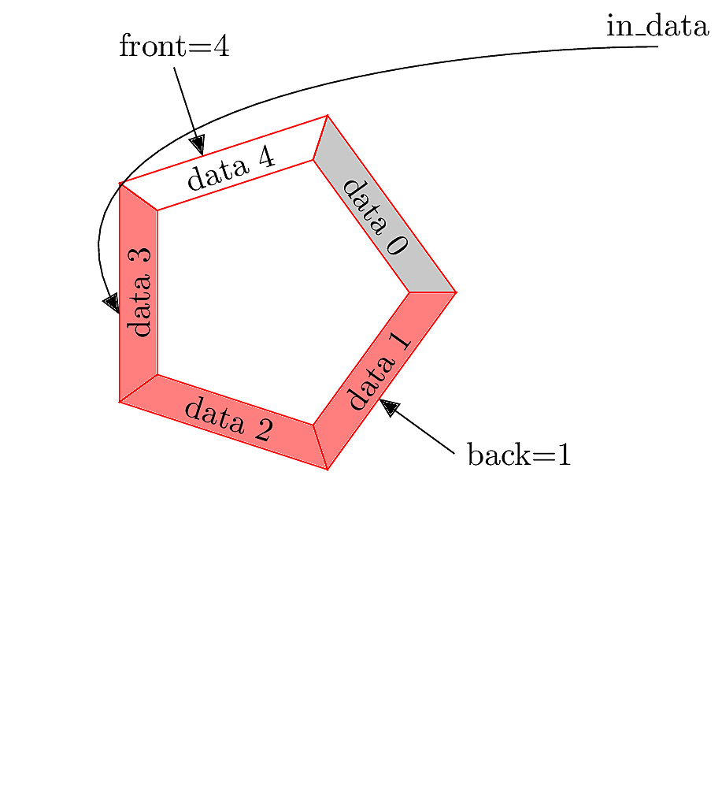
Eventually, front reaches the highest array index. When this happens, we can still add more data if front is “rolled over” to index zero.
When new data arrives, it over-writes the stale data at index 0. Now the buffer is full. No more data can be added until some is removed. In order to detect that the buffer is full, we need to maintain a count register. When count=DEPTH, the buffer is full. When count=0, the buffer is empty.
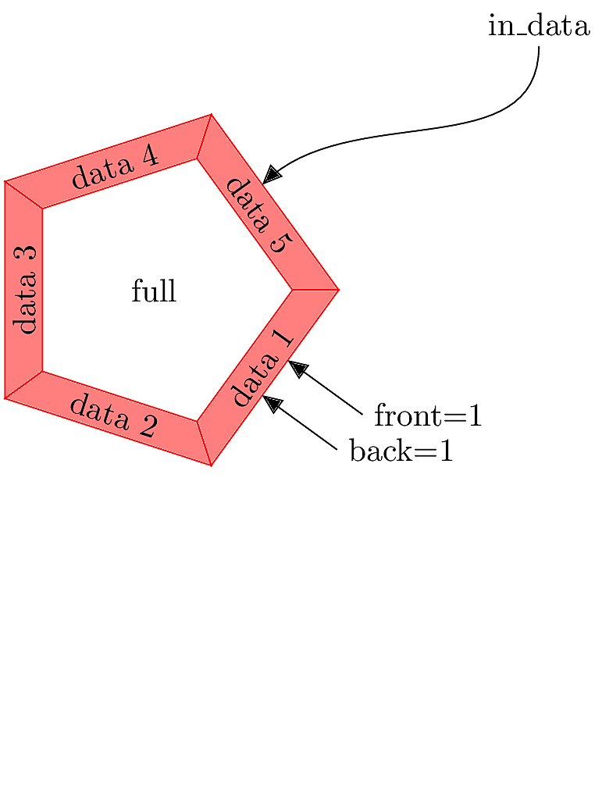
Next, some data is pulled out from the back of the buffer, and back is incremented. The buffer is no longer full.
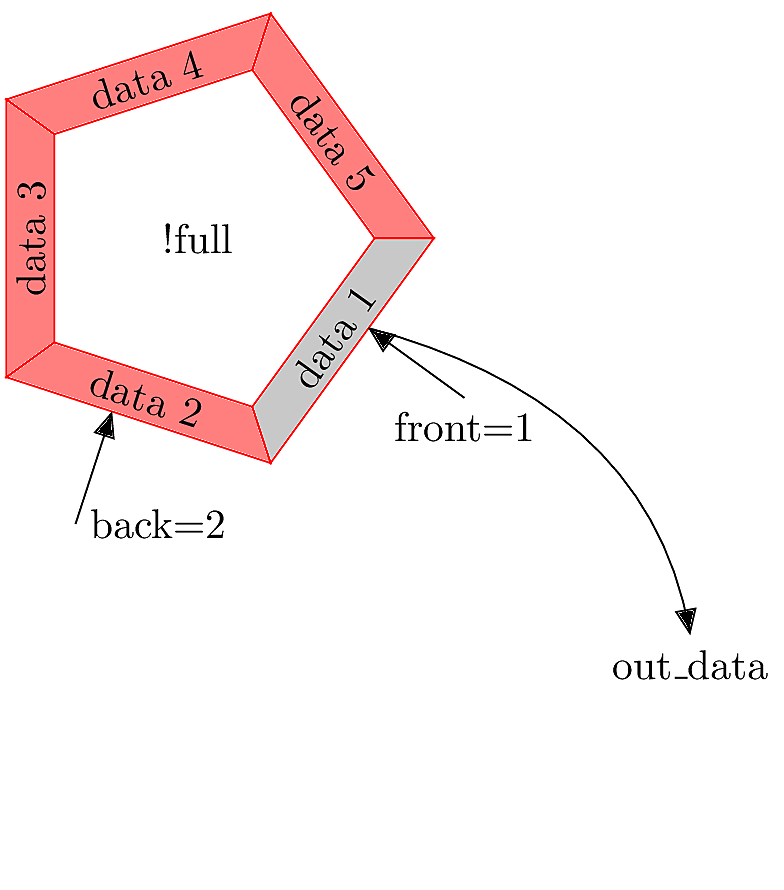
As data is removed, back is repeatedly incremented. Once back crosses index 4, it will need to “roll over” to index 0, as we did with front.
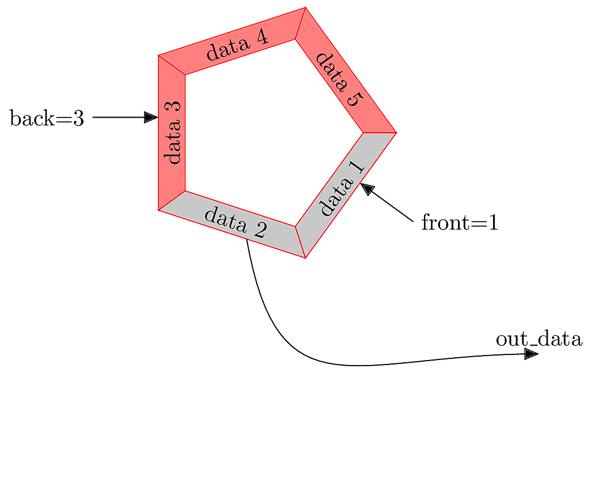
At minimum, we will need the signal declarations shown below.
input [WIDTH-1:0] in_data;
output reg [WIDTH-1:0] out_data;
output reg empty;
output reg full;
// These signals are generated by the handshaking processes:
reg incr; // Add new data into the buffer
reg decr; // Pull old data from the buffer
// Here are the buffer components:
reg [WIDTH-1:0] buffer [DEPTH-1:0] ;
reg [ADR_WIDTH-1:0] front;
reg [ADR_WIDTH-1:0] back;
reg [ADR_WIDTH-1:0] count;initial begin
incr = 0;
decr = 0;
front = 0;
back = 0;
count = 0;
empty = 1; // Presumably we start empty
full = 0;
out_data = 0;
endalways @(posedge clk) begin
// Add data
if (incr && !decr && !full) begin
buffer[front] <= in_data;
// Update count, detect full/empty
count <= count + 1;
empty <= 0;
if (count == DEPTH-1)
full <= 1;
if (front < DEPTH-1)
front <= front + 1;
else
front <= 0;
end
// ... continued ...Within the same always block…
// Remove data
else if (!incr && decr && !empty) begin
out_data <= buffer[back];
// Update count, detect full/empty
count <= count - 1;
full <= 0;
if (count == 1)
empty <= 1;
if (back < DEPTH-1)
back <= back + 1;
else
back <= 0;
end
//... continued ... // Add and Remove data
else if (incr && decr) begin
out_data <= buffer[back];
buffer[front] <= in_data;
// No need change count, empty or full status.
if (front < DEPTH-1)
front <= front + 1 ;
else
front <= 0;
if (back < DEPTH-1)
back <= back + 1;
else
back <= 0;
end Based on the discussion so far, implement a FIFO in Verilog. Your implementation should handle the following:
WIDTH=8, DEPTH=5, and ADR_WIDTH=3.For each of these things, you must provide appropriate initialization and internal reg declarations.
Your module should be named fifo. Test your design using the provided testbench. This test will work best using the command-line simulation method, not the full Vivado project mode.
The test bench will write data into your FIFO and then read it back out. It reports a list of input_data and then a list of output_data. You should see that they have the same values and the same order, like this:
============== PUSH DATA IN ===============
2 in_data: 129 tx_rdy done:0 count:0 front:0 back:0
12 in_data: 9 tx_rdy done:0 count:1 front:1 back:0
22 in_data: 99 tx_rdy done:0 count:2 front:2 back:0
32 in_data: 13 tx_rdy done:0 count:3 front:3 back:0
42 in_data: 141 tx_rdy done:0 count:4 front:4 back:0
44 buffer full
============== PULL DATA OUT ===============
52 out_data: 129 rx_rdy:1 done count:5 front:0 back:0
62 out_data: 9 rx_rdy:1 done count:4 front:0 back:1
72 out_data: 99 rx_rdy:1 done count:3 front:0 back:2
82 out_data: 13 rx_rdy:1 done count:2 front:0 back:3
92 out_data: 141 rx_rdy:1 done count:1 front:0 back:4
94 buffer empty
Simulation completeUse $fwrite statements to save testbench output in a file called “fifo_test.txt”. Add it to your repository.
A stack is a Last-In First-Out (LIFO) buffer. The concept is similar to a FIFO, with these differences:
out_data is always taken from the front rather than the back of the buffer.back of the stack is always at index 0.front index ranges from 0 up to DEPTH-1, so it is identical to count.Copy your FIFO source code to create a new module called stack. Modify the design so that it behaves as a LIFO instead of a FIFO. Test the design using the same testbench; you should see the out_data appear in reverse order.
Save the testbench output in a file called “lifo_test.txt” and add it to your repository.
Copy your bi-directional UART design files into the src directory. Modify the top module as follows:
This behavior should be fairly similar to your previous UART design. Demonstrate your result in a short video, and upload the video to Canvas. (Do not add video files to the git repository, they are too large).
Score Counter
Design a system with this specification:
WIDTH=10 and DEPTH=5.WIDTH=10, like the stack.full.empty.